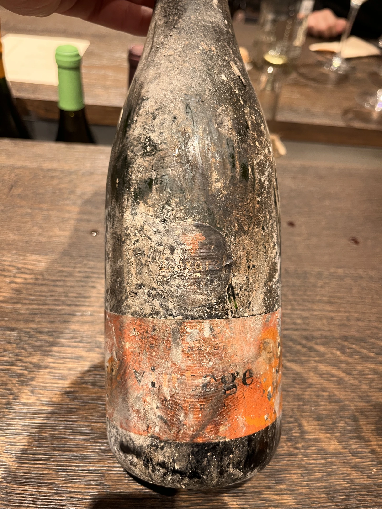

Monthly report - October 2022

The numbers are crazy. More than 100 consumed bottles in October and 94 reviews in total. Yet I struggle to explain the correlation between these numbers and more frequent attacks. Most of us are alive, and wine is still accessible even in dark. We gather in offices, we drink in corridors and we share the warmth.
Novelties
- Félicien Brou Vouvray Brut is my first sparkling from Vouvray AOC.
- 2Naturkinder Kleine Wanderlust 2018 is my first Regent.
- Populis Wabi-sabi 2018 is my first wine from Mendocino County, California.
- Ovum To love somebody 2018 is my first wine from Rogue Valley AVA, Oregon.
- Villalobos Carignan Reserve 2016 is my first Carignan from Chile.
- La Garagista Vinu Jancu Reserve 2017 is my first hybrid wine, my first La Crescent and my first wine from Vermont.
- Pol Opuesto Mala Hierba Nunca Muere 2017 is my first Corbeau (aka Douce Noire).
- L’Octavin Clé à molette 2018 is my first Molette.
- Dominique Belluard Cépage Gringet Les Alpes 2018 is my first Gringet and Vin de Savoie AOC.
- Sous Le Végétal Auguste 2018 is my first Avgoustiatis.
- Nicolas Carmarans Mauvais Temps 2019 is my first made of Fer Servadou and Negret de Banhars grapes. It’s also my first IGP Aveyron.
Favourites
Traditionally, preparing a list of my favourites is a tough task to accomplish. I try to avoid listing wines based solely on my scores (you can do it yourself by sorting the table below). Instead, I try to pick wines that really stood out for me. So this month my favourites are the following bottles.
- 8.7 Domaine Stephane Magnien Morey-Saint-Denis 1er Cru Les Monts-Luisants 2008
- 8.5 Viña Tondonia Bosconia Reserva 2011 is my favourite red wine by this producer.
- 8.5 Zidarich Teran 2012 is a beautiful result of the scrupulous craft.
- 8.5 Marco De Bartoli Integer Grillo 2018 is one of my favorite Grillo wines. Every bottle is a fiesta.
- 8.0 Tchotiashvili Khikhvi Rcheuli Qvevri 2017 is stylish, clean and not mainstream orange.
- 8.0 Castellare di Castellina Chianti Classico Riserva 2015 is the first Chianti in many years that I enjoyed so much. Age is required here.
- 7.5 Loxarel Clàssic Penedès Brut Nature Reserva 2019 - despite being one of the ‘survived’ wines, it is more than alive. Maybe it looks awful, but the content is great.
- 7.5 Patrick Bouju Festejar! Rosé 2021 is Pet Nat that I will definitely drink more. Pricey as all ancestrales, but goes well if you share it with others.
There are some wines that I have to mention, even though they are not among my favourites of the month.
- 9.0 R. López de Heredia Viña Tondonia Blanco Reserva 2011 is as great as expected. I served it blind on A bit of Spain and it was a blast and obvious winner of the night. It’s hard to get it, but it worth every penny.
- 9.0 Henriques & Henriques Boal Single Harvest 2000 is my favourite Madeira so far. Opened a bottle this month.
- 8.0 Daniel Gómez Jiménez-Landi Las Uvas de la Ira 2018 is one more bottle explaining the beauty of high altitude Garnacha.
Outcasts
- 6.0 Pol Opuesto Qué Grande SOS! 2017 - it just didn’t click with me. Maybe I was overexcited to tasted it, who knows.
- 5.5 2Naturkinder Kleine Wanderlust 2018 - not my style, lacks balance, acidity is for Vasyl.
As you see, not so many outcasts. The month was full of great wines, the average raring is 7.5484!
Countries
Every month my top 3 rated countries stay the same. The only thing that changes is the order. So I am more interested in the countries that come below. The most amazing part is that I had lots of bottles from Argentina, USA, and Chile. Ok, I drink Argentinian wine time to time, but Chile is a truly rare guest on my table.
Vintages
This month is truly interesting. The most rated vintage is 2018. 2021 is getting more and more vocal. The oldest is 2000. And according to my notes, 2017 and 2020 are the best vintages, with the average scores of 7.65 and 7.6, respectively.
Grapes
69 grapes, some of them are so rare that even sommeliers are left puzzled. Kydonitsa, Jgia, Fer Servadou, Negret de Banhars, La Crescent and some others. Just happy to be part of this feast.
All ratings
Final words
No final words this month. Just safe travels!